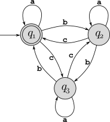
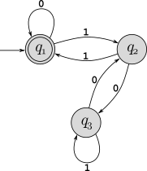

Consider sets \(A=\{a,b\}\) and \(B=\{a,b,c\}\).
Write out all elements of \(A\times B\).
Prove that for any finite sets \(A\) and \(B\), \(|A\times B|=|A|\cdot |B|\).
Let \(S\) be a set of students, and \(C\) be the set of computer science classes. We want to find “experts” so we want to map students to classes in which they have made an A. What is the appropriate mathematical structure to model this? A function? A relation? Justify your answer by describing key properties of both the original problem and the mathematical structure that you chose.
Recall that a directed acyclic graph (or “dag”), is a directed graph that does not contain any cycles.
Prove that every finite dag has at least one vertex that has indegree zero (hint: you can use either proof by contradiction or proof by construction here).
Show that the “finite” part of the previous question is necessary by describing how to construct an infinite dag in which all vertices have non-zero indegree.
Since the property that the dag is finite is a necessary condition for the statement in part a to be true, there must be some part of your proof that specifically uses the fact that the graph is finite. Clearly identify where that is in your proof.
Each of the following English language statements describes a language over the binary alphabet. Write each one as a set using set-builder notation (in other words, set notation using a rule). You may define new functions if they are helpful in simplifying your answer.
The set of all binary strings that contain at least one 0 and at least one 1.
The set of all binary strings with even length.
The set of all binary strings that contain an even number of 1’s.
The set of all binary strings that read the same forward and backwards (in other words, the set of all binary palindromes). Note that the “reverse” notation at the top of page 14 in the book is very useful here!
Consider the DFA \(M_1\) shown below:

What is the start state?
What is the set of accept states?
What sequence of states does the machine go through on input abbaac?
Does the machine accept string abbaac?
Does the machine accept \(\varepsilon\)?
Consider the DFA \(M_2\) shown below:

Give the formal description of \(M_2\), similar to the textbook’s description below Figure 1.6 on page 36.
Consider the DFA \(M_3\) defined by \((\{q_1,q_2,q_3,q_4\},\{0,1\},\delta, q_1, \{q_2\})\), where \(\delta\) is defined by the following table:
| 0 | 1 | |
|---|---|---|
| \(q_1\) | \(q_4\) | \(q_3\) |
| \(q_2\) | \(q_2\) | \(q_2\) |
| \(q_3\) | \(q_2\) | \(q_3\) |
| \(q_4\) | \(q_4\) | \(q_2\) |
Draw the state diagram for this DFA.
List all strings of length 3 accepted by this DFA.
This DFA accepts exactly the set of strings in one of the languages given in problem 4 above. Which language? (Justify your answer with clear reasoning – you don’t need a formal proof here, just a good argument.)